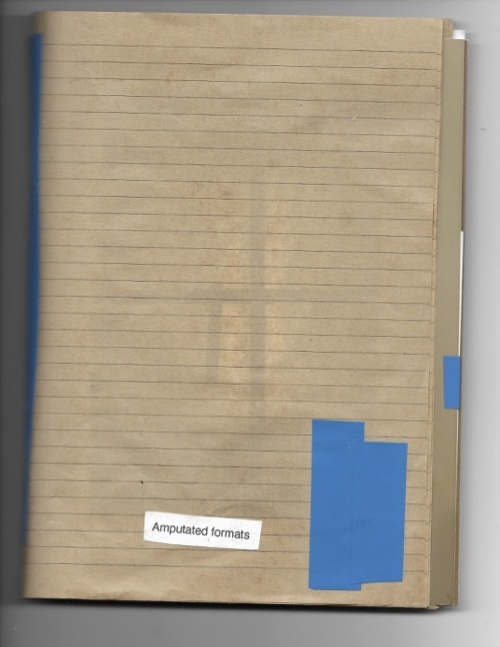

Darling, 2023
ink on paper, poetry, digital photo prints, iso tape, plasitc pockets and wire
showed together with my video edit "Dodge" 2023, in Postproductions at studiengalerie-1357 with The Institute of Scene Experiments initiative by Nikhil Vettukattil
how leisure always imitates labor, 2023
performance and installation, conceived by k²O (Jan Kunkel, Vera Karlsson, and Alie O.)
k²O website

Amputated fromats, 2023
book/collage with digital and analogue photo prints and poetry, (the work is autonomous but links to "Keywork/s" series 2022)
in compound, bbberlin


FET MIASMA MIS, a TLC.23 event with participants on the poster, an exhibition by Kiera Fox and Katie Shannon, at Le Bourgeois, 3236rls London
EAREJISOV, shoe design

During 2023 I produced digital music with harp and voice by Livia Rasku, Stringbabe, premiered at Garcia NRG a music event organised by me
at West Germany in Berlin and also played at Loop Hole in Berlin, we released an demo album on cd